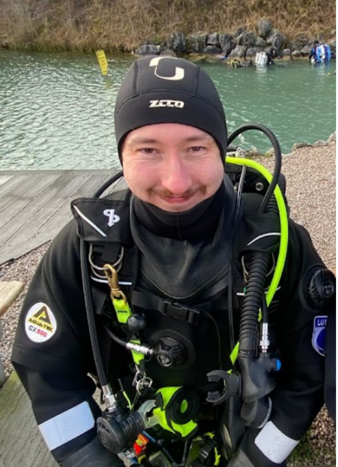
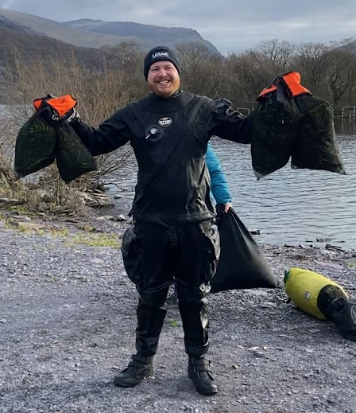
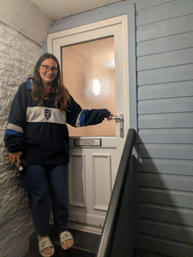
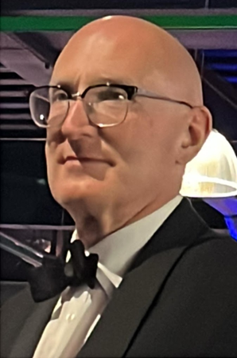

Meet the 2026 Committee
Meet the students that keep the club running smoothly!

Tom
President
I’m Tom, president of the club for this year. I joined LUSAC 2 years ago when I started studying electrical and electronics engineering having never dived before and have worked my way up to become a sports diver. I also began playing octopush within the club last year and was part of the team that went to the student nationals competition in leeds. I love being part of the club as it has a great community of members who are always happy to assist with any questions you may have and we have an incredible range of trips every year!

Kira
Vice President and expeditions officer
I'm Kira and I'm the vice-president and expeditions officer for 2026/27, alongside being an assistant open water instructor. I learnt to dive with LUSAC back in 2023 as a fresher, and have since progressed to being a dive leader. I particularly enjoy planning trips for club members, and instructing, and my favourite diving has been along the south coast in Plymouth and Cornwall. Joining LUSAC has given me the opportunity to meet friends and mentors from all across the country, and it truly is a big family.

Alex
Training Officer

Jack
Secretary
Hi, I’m Jack. I joined LUSAC at the start of last year and recently qualified as an ocean diver. I’ve loved being a member of the club because of the tight knit community and the opportunities to see UK marine life from a new perspective. Alongside diving with the club I’ve begun playing octopush, a sport that is significantly more fun than it sounds! I even got to attend student nationals, in Leeds, where we met and competed with teams from across the UK! To any aspiring divers out there, there is no better place to start than LUSAC. Moreover, I highly recommend giving octopush a go as you never know how much you might like it!

Will
Treasurer

Tony
Membership Secretary
Joining the club in 2024 allowed me to see the wildlife in it's natural habitat that I learn about in my marine biology degree. LUSAC have helped me to develop from a complete beginner to a sports diver, and perhaps one day an instructor. As social secretary and a member of the welfare team, I organise social events and help to mediate any disagreements in the club. I’d recommend learning to dive for anyone who gets the opportunity. Every dive is a memorable experience, developing a valuable skill as an ocean scientist.

Noah
Social Secretary
Hiya! I am Noah and I am the Social Secretary for LUSAC in 2026/27! I am an Ocean Diver and am currently training for Sports Diver. An as Environmental Scientist I absolutely love seeing the natural world around us and also love helping out with conservation projects where I can, such as the Llyn Padarn Invasive Weed project in North Wales. My favourite experience so far has been the Eyemouth trip, where I was truly shown the excitement of the underwater world in all its glory! I am really excited to be a part of the LUSAC committee and give my contributions in social events and in organising dive trips - anything diving I am IN!
Jenna
Social Secretary
Mia
Marketing Officer
Hi I’m Mia, marketing officer for this year. I joined LUSAC and crossed over from PADI which has given me fantastic diving opportunities in the UK. I look forward to pursuing my dive leader alongside the exciting trips coming up this year with all the other lovely people who are part of this club!

Liam
Diving Officer
Hi, I’m Liam, current DO of LUSAC and all-around dive enthusiast. Learning to dive has been, quite frankly, one of the most eye-opening and horizon-broadening choices in my life thus far. Scuba diving has taken me to some incredible parts of the world, and revealed parts of the UK that I never would have seen otherwise. It has unveiled a multitude of strange and wonderful creatures, and a concomitant appreciation for marine ecosystems. However, although marine life is a natural marvel that never gets old, it is wrecks that prove the greater marvel for me. Diving on wrecks has unlocked a tactile interaction with history, all packaged up in little adventures, which has certainly proved to be a welcome addition to my schedule of exploits. More peculiarly, due to taking up diving, it has also introduced me to a sport developed by scuba divers, aka underwater hockey, of which I’m now a very active player & referee. I’d strongly recommend everyone to give scuba & underwater hockey a go at least once…you never know, you may be one of the lucky ones to fall in love with it!

Ioanna
Marine champion!

Amara
Boat Officer
Joining LUSAC has been one of the best parts of my university experience, offering a brilliant way to meet people from across different courses. I particularly enjoy the progression from our weekly pool drills to the weekend trips, where we get to explore the reefs and wrecks around the British coast. For me, diving is the perfect escape from the library, providing a unique sense of calm and a bit of adventure during the term.
Edward
Equipment Officer

Russell
Compressor Officer
I only took up diving a few years ago, proving it is never too late to start a new adventure. The club’s training gave me the confidence to explore the UK’s coastal waters, and the community is incredibly supportive of everyone. It is a fantastic way to spend weekends away from the desk.
Tomos
Octopush Captain
Hi I'm Tomos, Captain of the Underwater Hockey Club at Liverpool. I am also a ocean diver and hope to get more qualified with the club. We are great as a team but even better as a club.
Liv
Octopsh Vice-Captain
Hi, I'm Liv - Vice Captain of Liverpool Under Water Hockey Club and a Sports Diver. Part fish, part forward, but fully committed to pushing lead puck around a pool floor.